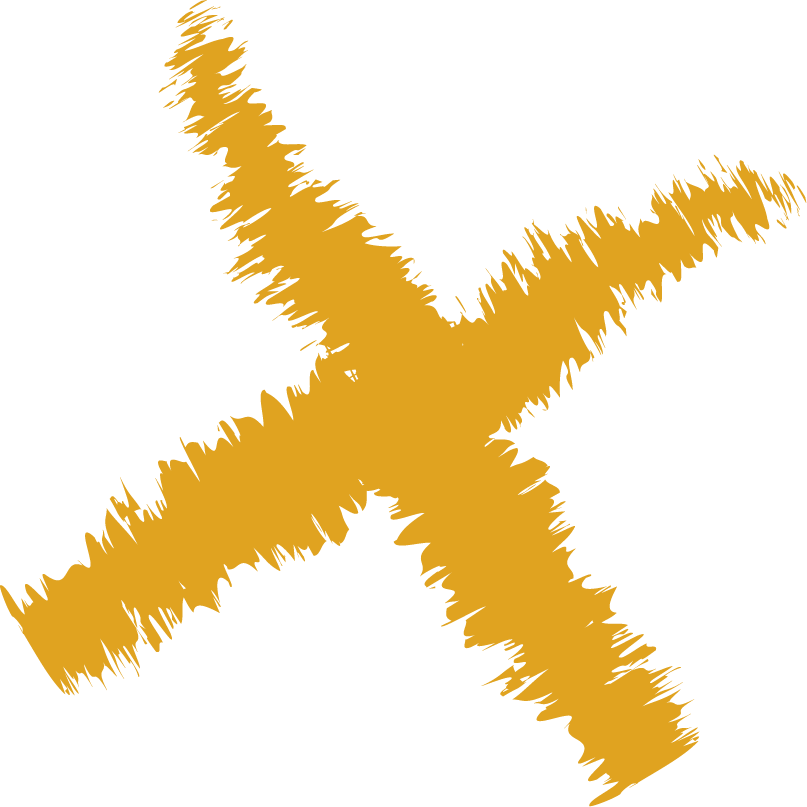

3 gestructureerde levels. Van basisanalyse tot individueel ontwikkeltraject. Leer precies wat je nodig hebt — en pas het direct toe op het veld.
De meeste coaches zien dat er iets niet klopt — maar missen een systeem om het structureel te verbeteren.
Je herkent fouten, maar zonder kader om het te analyseren blijft de oorzaak vaag.
Van video naar veld is een grote stap. Zonder structuur vertaal je inzichten niet naar gedrag.
Je weet het wel — maar het vertalen naar iets wat een speler echt snapt en uitvoert, is een vak apart.
De Level Courses zijn gebouwd voor coaches die hun spelers aantoonbaar beter willen maken — met een systeem, niet met geluk.
Je traint 2–3 keer per week, wil elke minuut tellen en zoekt een manier om spelers écht te ontwikkelen.
Je hebt ervaring maar wil een stap verder. Je wil inzicht in individueel gedrag, niet alleen in het team.
Je gelooft dat videoanalyse waardevol is, maar mist een kader om het concreet en herhaalbaar te maken.
Elk level bouwt voort op het vorige. Je leert precies wat je nodig hebt — niet meer, niet minder.
De basis van hoe je individuele spelers analyseert.
Je leert:
Praktijk:
Je leert de optimale reactie herkennen in de meest voorkomende wedstrijdsituaties:
Per thema leer je:
Nu pas je het toe op het veld.
Meer dan 50 coaches gingen je voor. Level 1 is gratis — geen creditcard, geen verplichting. Je kunt vandaag nog beginnen.
Je verdiept je in alle Level 1-thema's:
Je leert beslissingen en gedrag per positie analyseren:
Je leert:
Je vertaalt patronen naar duidelijke verbeterpunten.
Je leert:
Je leert een analyse omzetten naar een gericht ontwikkelplan per speler.
Je leert een speler te begeleiden binnen een gestructureerd traject.
Je leert hoe je spelers op hoog niveau begeleidt en zelfstandiger maakt.
Level 1 is gratis. Geen creditcard. Begin vandaag.
Begin nu met Level 1